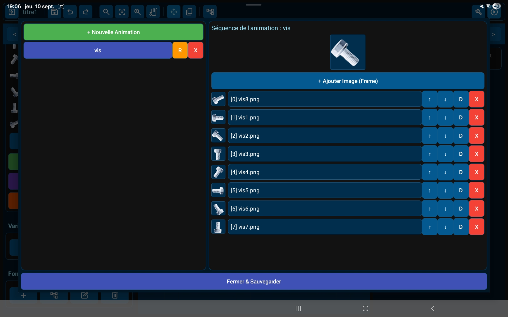
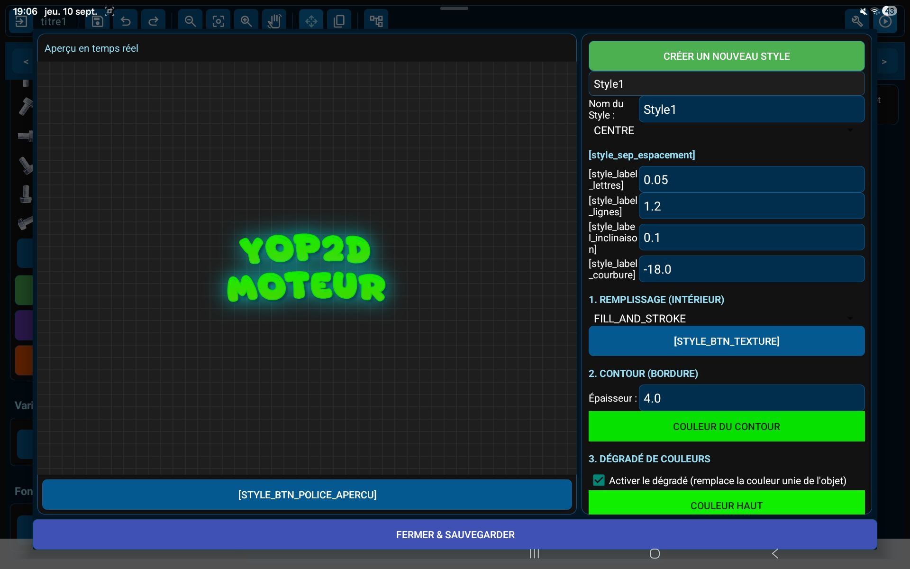

Project Management & Export

From the home screen, find your projects with auto-generated thumbnails and open the included example games to learn quickly. Yop2D handles the whole process: with a single button, it builds your game into a standalone APK file, directly on your device, with no computer, server or third-party tool.
Visual Level Editor

An interface inspired by industry standards, streamlined for touch screens. Tap an object to select it, drag to scroll the scene, and use the handles to move, resize or rotate it. Hide or lock any object with one tap from the object list, so nothing gets moved by accident.
Tile-Based Levels

Import a tileset, paint your levels tile by tile, and mark once which tiles are solid. Level collisions are handled automatically, making platformers and top-down maps quick to build.
Real-Time Animation Editor

See your imported frames at a glance and preview your 2D animations in real time, right inside the engine. In game, animations follow pause and slow motion like everything else.
Built-in Titles & Text Effects

Create stylized titles (gradients, outlines, neon, shadows, relief, textures, curves) directly in the engine, instead of generating heavy PNG text files in other apps. Your final APK stays light.
Visual Node System

No code to write: you build your game logic with descriptive visual blocks (nodes) connected together. Over 90 ready-to-use nodes cover movement, physics, animations, sound, dialogues, inventory, camera, timers and conditions. Collapse whole chains of nodes to keep your workspace clear.
The Brain of Your Games

Select a node to configure it: pick its target object, adjust values, choose images, sounds or animations from lists. Simple formulas like =score + 1 let you use variables, the finger position, the joystick, time or object properties anywhere.
Example Games Included

Several small, complete games come with the engine. Open them, play them, then tweak them to understand how everything works. They are the fastest way to learn Yop2D.
On Tablets and Phones

Tablets offer the most comfortable experience, but Yop2D also runs on Android phones in landscape mode. On small screens, the panels switch to a compact layout to leave as much room as possible for your scene.
Engine Capabilities
Scene as Object (Prefabs)
Any scene can be placed as an independent object inside another scene. Perfect for a row of identical enemies or reusable game pieces.
Tag Targeting
Give objects a tag, and a single node can act on all of them at once: move every enemy, destroy every coin, change every button.
Physics & Behaviors
Gravity, bouncing, impulses, collisions, ground detection, plus chase and flee behaviors to build enemy AI in minutes.
Tilemaps
Paint levels from a tileset and mark solid tiles once: collisions are automatic.
Variables, Inventory & Saving
Build complete mechanics with variables and inventory lists, and save or restore the game state at any time.
Full Touch Controls
Virtual joysticks, buttons and HUD overlays, with multi-touch: move and jump at the same time.
Pause & Slow Motion
The whole game (movement, animations, fades, timers) follows pause and slow motion, while your pause menu keeps working.
Dialogues & Sound
Display text dialogues for adventure games, play sound effects and background music.
Node Library
A glimpse of the ready-to-use nodes available to build your game logic visually.
🔴 Events & Triggers
Start, Every Frame & Touch Events
Run logic when the scene starts, on every frame, while a finger is held down, or when the player taps, holds, drags or releases an object. Several fingers are handled at once.
Collisions, Zones & Physics Hits
Detect when two objects touch, when an object touches any object with a given tag, when it leaves a zone, or when it hits something in the physics engine. The "involved object" target lets you act on the exact object that collided.
⚙️ Logic & Flow Control
Condition, If / Else, Switch
Branch your logic with conditions (and, or, comparisons), if / else-if / else chains, or a "switch on value" node with up to six cases.
Sequence, Repeat, Wait & Cooldown
The Sequence node runs several actions in order from a single point, keeping scripts readable. Repeat actions, wait a few seconds, or limit how often something can happen with a cooldown.
Functions & Custom Events
Group reusable logic into functions and call them from anywhere, or trigger your own named events.
👾 Objects, Appearance & Animation
Create, Clone, Destroy & Shoot
Create objects on the fly, clone prefabs, destroy objects or every object with a tag, and fire projectiles in a chosen direction.
Properties, Fades & Animations
Change position, size, rotation, opacity, color, text or visibility, fade objects in and out, and play, pause, resume or speed up animations.
🚀 Movement, Camera & Scenes
Movement & Physics
Push, teleport or smoothly glide objects, apply impulses, turn towards a target, and check whether an object is on the ground or moving.
Camera
Follow an object with smooth tracking, add camera shake, and vibrate the device for impact effects.
Scenes, HUD & Game State
Switch scenes, restart a level, open or close HUD overlays, pause or resume the game, and save or restore the game state.
Join the Community
Yop2D is an independent project under active development. Report bugs, share your games, suggest features or help improve the translations.
Frequently Asked Questions
What is Yop2D?
Yop2D is a free, no-code 2D game engine for Android. It lets anyone create a complete video game with visual nodes, without any programming knowledge, and export it as an APK directly on the device.
Does Yop2D work on phones?
Yes. Tablets give the most comfortable experience, but Yop2D also works on Android phones in landscape mode, with a compact interface that leaves more room for the scene.
Do I need a PC or an internet connection to build the APK?
No. Yop2D builds and exports your game as a standalone APK directly on your device, 100% offline. No cloud compilation.
Is Yop2D a good alternative to Godot on Android?
Godot is very powerful, but it can feel overwhelming on a touch screen. Yop2D is built for touch from the ground up, and shares Godot's "scene as object" (prefab) idea. If you want a purely visual, no-code engine that runs entirely on your Android device, Yop2D is designed for you.
I don't know how to code. Is that a problem?
Not at all. Yop2D replaces code with descriptive visual nodes (visual scripting). It's made for beginners and for creators who want to focus on game design.
Can I make platformers or top-down games?
Yes. The tilemap editor lets you paint levels with automatic collisions, and the physics engine handles gravity, jumping and bouncing.
Can I make 3D games with Yop2D?
No. Yop2D is focused on 2D games, to stay simple, light and comfortable on mobile devices.
Does Yop2D collect data?
Yop2D sends one anonymous statistic when it opens (app version, Android version, device language) to count how many people use it. No personal data and nothing from your projects. You can turn it off on the home screen, and the games you export send nothing.
How much does Yop2D cost?
Yop2D is 100% free. Create, build and export your games with no hidden fees or subscriptions.